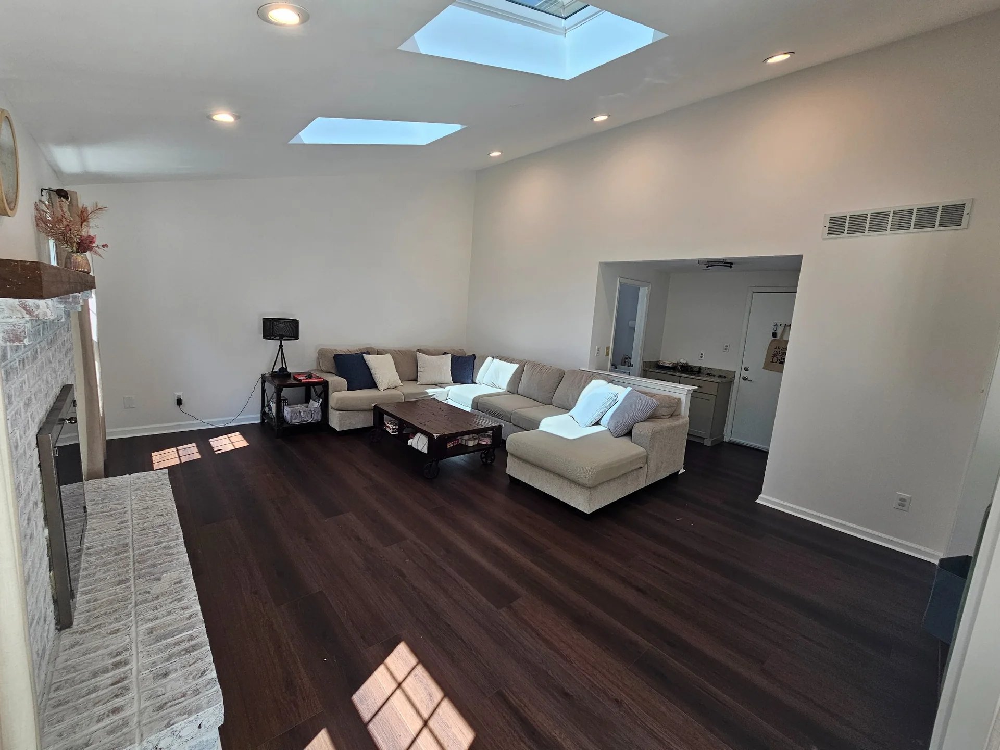
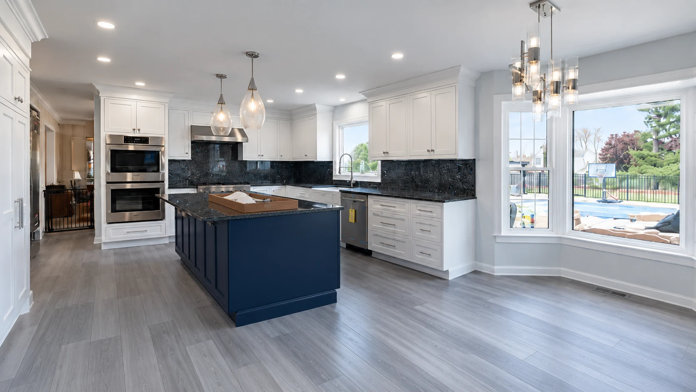
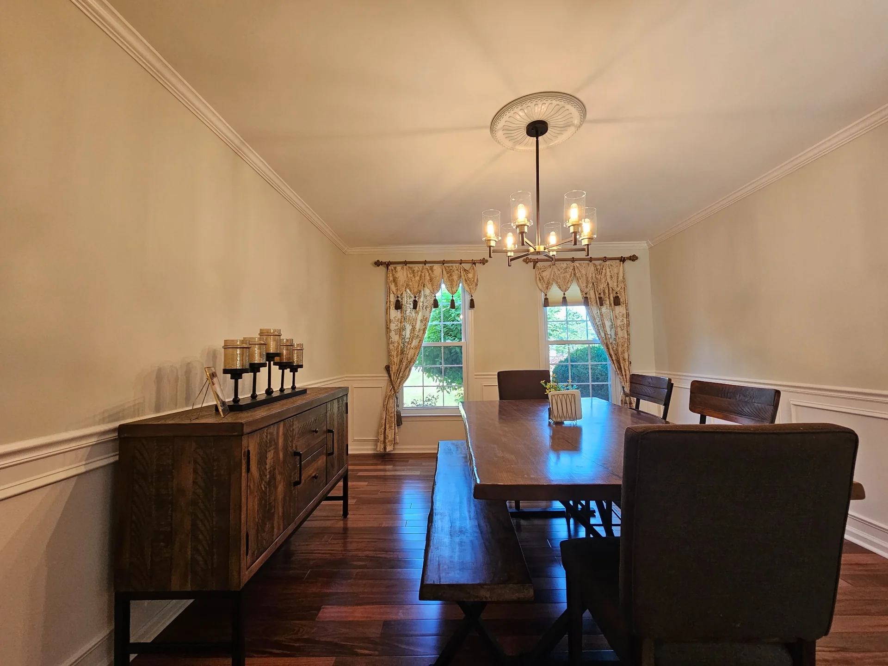
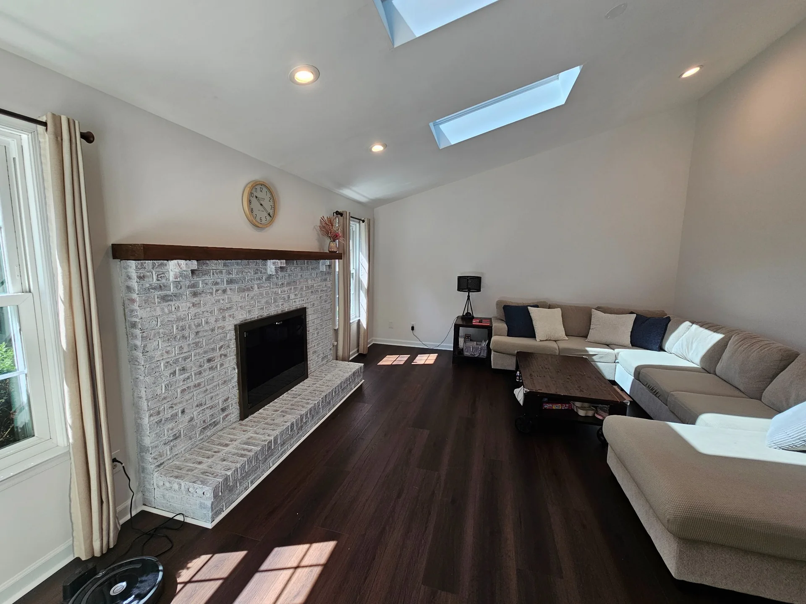
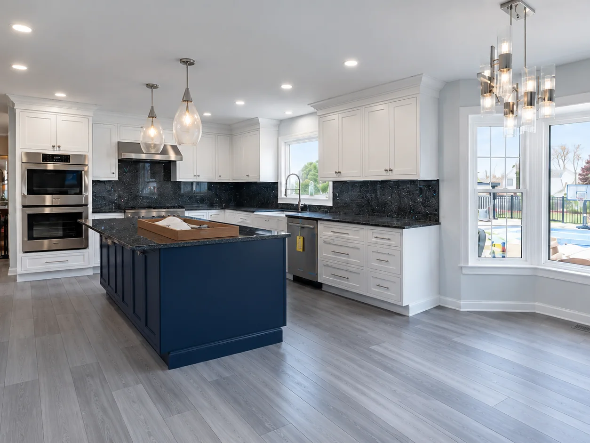
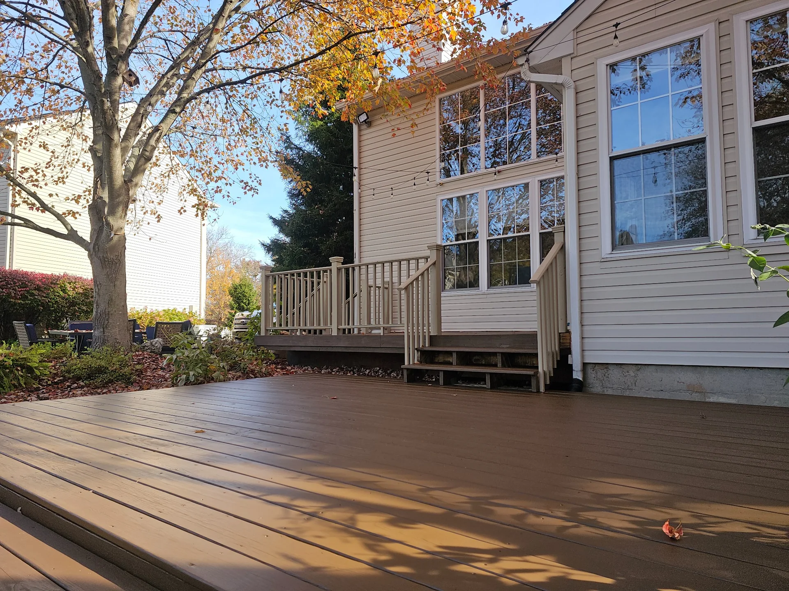
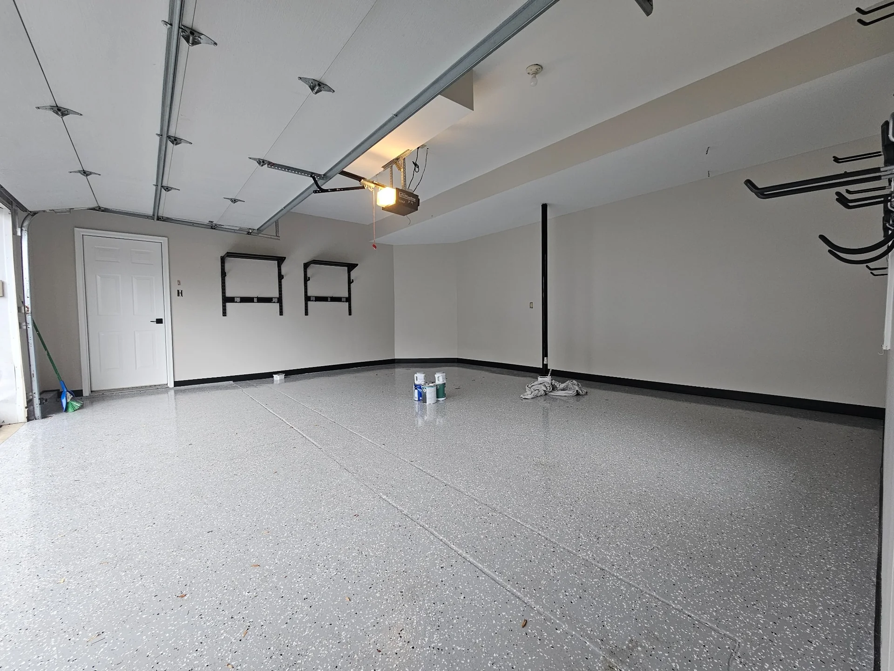
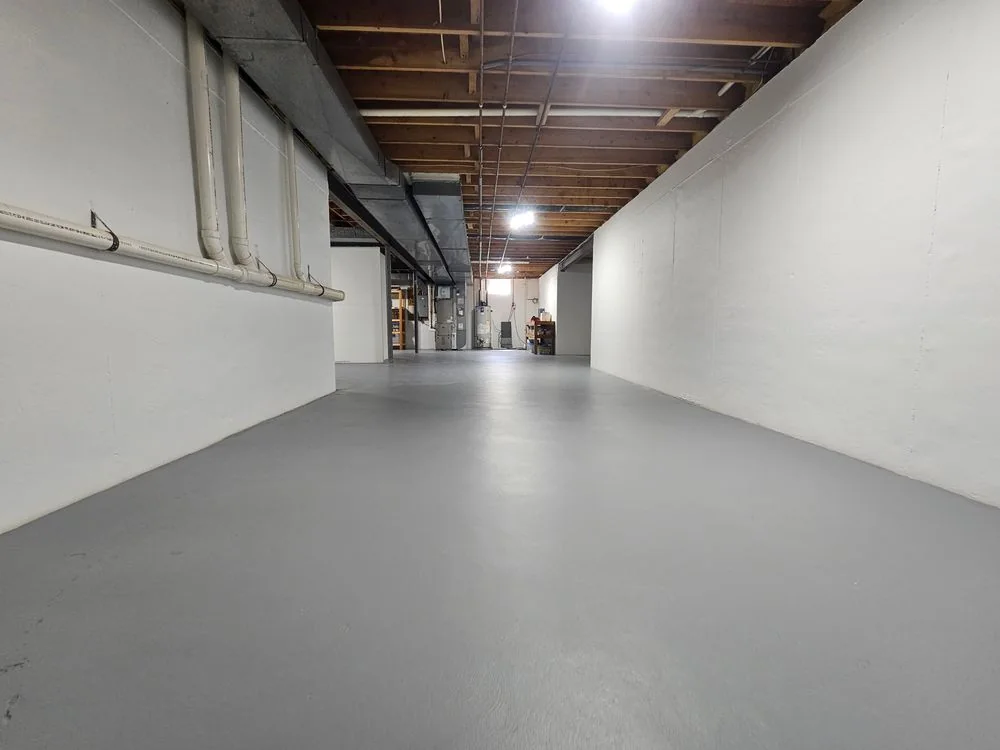

North Wales · Interior

Cascade Painting · Lansdale & Montgomery County, Pennsylvania
Preparation-first painting, clear communication and beautiful finish work — handled with the care your home deserves.
Reputation, not marketing copy
Recent public feedback from our Google Business Profile.
Reviews open on Cascade Painting’s public Google Business Profile.
Customer reviews are available on Google.
Owner-led by design
Cascade Painting is veteran and family owned, based in Lansdale and intentionally focused on the communities around us. The company is built around a clear point of accountability, disciplined preparation and communication that stays straightforward from estimate through final walkthrough.


Selected spaces





Project stories
The Cascade Standard
Not just at the end. At every point you interact with the company.
We define what is being painted, repaired and protected before the project starts.
Protection, patching, sanding and surface readiness come before finish coats.
You know who to contact, what is happening and what comes next.
We review the work together and close the project with the same attention it started with.
Local by design
We focus on Montgomery County and nearby areas so estimating, scheduling and follow-through stay practical and the service stays personal.
Explore service areasQuestions worth asking
Interior and exterior painting, cabinet refinishing, drywall and surface repair, wallpaper removal, garage and basement floor coatings, and select commercial work throughout Montgomery County.
Start with a few project details. We will confirm fit, discuss the scope, and schedule an on-site visit when needed so the estimate reflects the actual surfaces and conditions.
Yes. Surface preparation is one of the most important parts of the job. The exact repair scope is defined before work begins so the finish is built on a sound surface.
Yes. The project journal uses real Cascade project photography, including work from North Wales, Maple Glen and other nearby communities.
Planning before hiring
Start with a conversation
Tell us what you want to change. We will help you define the next step without turning the first conversation into a sales pitch.